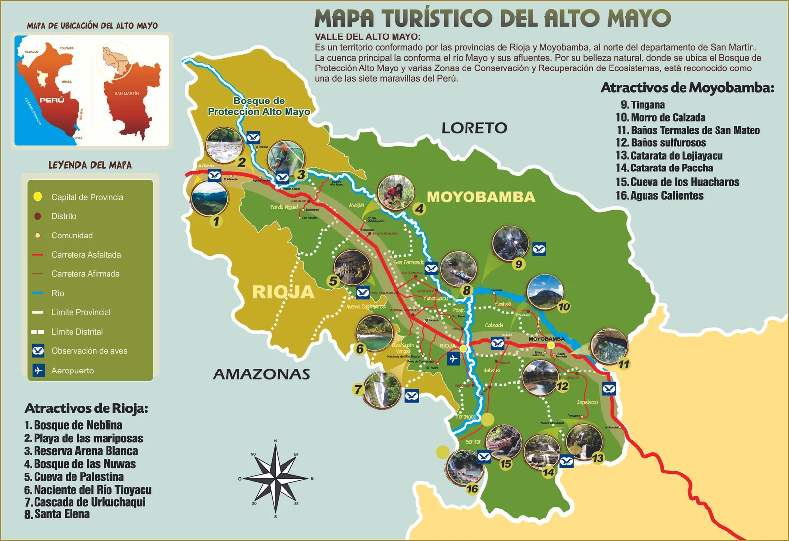
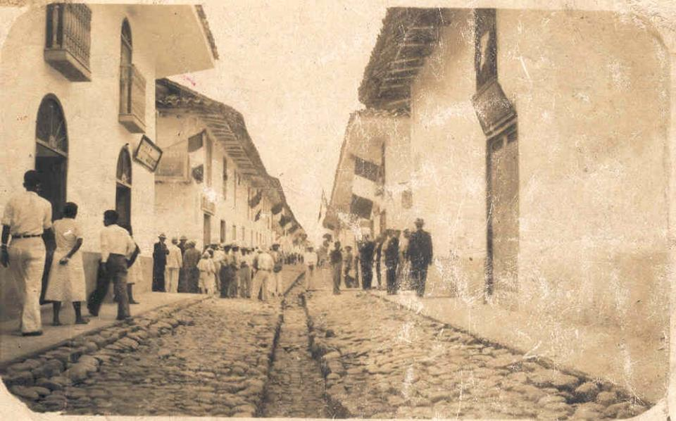
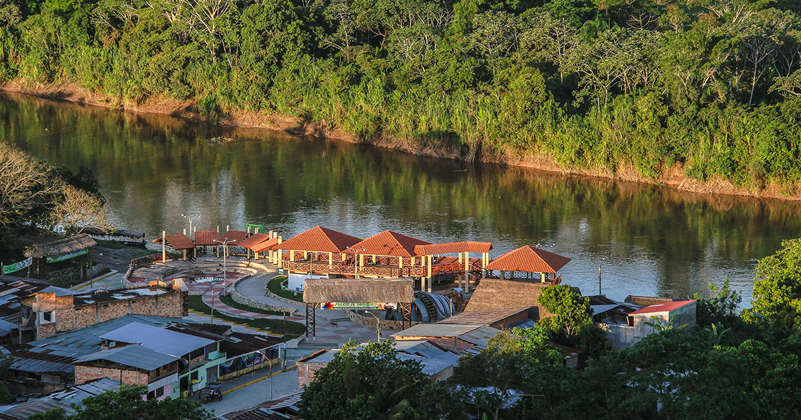

Moyobamba
La Ciudad de las Orquídeas

La Ciudad de las Orquídeas
Moyobamba, ubicada en la región San Martín del Perú, es la primera ciudad fundada por los españoles en la Amazonía peruana. Fundada el 25 de julio de 1540, es reconocida por su biodiversidad, su cultura y su gente acogedora.
Conocida originalmente como "Santiago de los Ocho Valles de Moyobamba", esta ciudad tiene una rica historia que combina la herencia indígena con la influencia española. Rodeada por los valles de Yuracyacu, Negro, Tónchima, Indoche, Rumiyacu, Gera, Huascayacu y Juningue.
Situada a 860 metros sobre el nivel del mar, Moyobamba ofrece un clima tropical templado con una temperatura promedio anual de 22°C. Es ideal para quienes disfrutan del contacto con la naturaleza y la tranquilidad.
